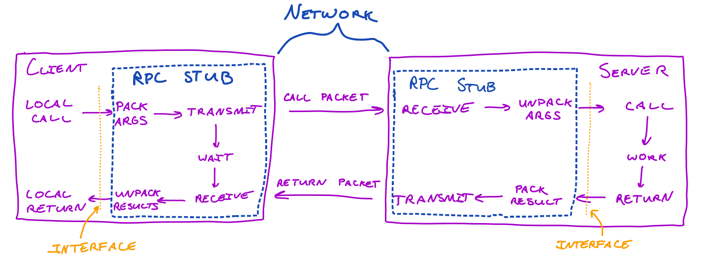

Writing an RPC From Scratch
...so you can appreciate the libraries that do it for you
Apr 18, 2021 · 3092 words · 15 minutes read
There are many ways for computers to talk to other computers. A commonly used approach is a Remote Procedure Call, or an RPC. An RPC allows for the abstraction of calling another computer’s procedure as if it were a local one with all of the transmission and communication taken care of.
Let’s say we’re writing some math program on a single computer and we have some procedure or function that handles checking if a number is prime. We can use this function as we’d like, passing it numbers and getting an answer, and it can live in our computer.
This is fine, and for doing many things, it’s very helpful to keep things nearby. It’s easy to call, and since it’s right alongside the rest of our code, there’s nearly no delay when we have to send it numbers.
But, there are cases when it isn’t as helpful to keep it local. Maybe we want to have it run on a really powerful computer with many cores and lots of memory so it can check really, really big numbers. Well, that’s not so bad. We can run our main program on this big computer as well, so even though the rest of the program might not need it, the prime finder can use as much of the computer as it can. What if we want to let other programs reuse the prime finder? We could make it a library that we can share between programs, but we might need a lot of memory resources for every computer that runs the prime finding library.
What if we just ran the prime function on a separate computer, then talked to that computer when we needed to check a number? That way, we can beef up this prime finder computer, and we can share it with other programs running on other computers.
The downside here is more complexity. Computers fail, networks are unreliable, and we have to worry about sending the answer back and forth. If you’re just writing a math program, you may not want to worry about network details, resending lost packets, or even how to find the computer that’s running the prime finder. If your job is writing the best prime-finding program, you may not want to worry about how to listen for requests or check for closed sockets.
This is where remote procedure calls come into play. We can wrap the complexity of inter-computer communication in the center, and we can surface a simple interface, called a stub, to either side of the conversation. To the math-program writer, we can make it look like you’re just calling the function that lives on the other computer. To the prime-finding program writer, we can just make it look like your function is being called. If we abstract away the middle, each side can focus on their respective details while still being able to enjoy the benefit of splitting this computation across multiple computers.
The main job of an RPC call is to handle this middle section. Part of it has to live on the math program computer, where it has to take the arguments, package them, and send them to the other computer. When it gets a response, it has to unpackage it and pass it back. The part that lives on the prime finder computer has to wait for requests, unpackage the arguments, pass them to the function, get the result, package it, and send it back to whoever asked for it. Importantly, both the math program and the prime finder program have a clean interface between them and their respective stubs that allows for this abstraction.

For more details, I’d highly recommend the 1981 paper Implementing Remote Procedure Calls by Andrew D. Birrell and Bruce Jay Nelson1, where they walk through the use of RPCs at Xerox PARC.
Writing an RPC from scratch…
What would this look like if we tried to write it?
(With a big old caveat that I’m far from an expert in C, but I can scratch enough down with a toy problem to (hopefully) get a concept across. Imagine a big asterisk after nearly every line that says “would be different for production code”. These examples are very much inspired by Beej’s Guide to Network Programming2.)
We can start with our basic math program. Maybe for the sake of simplicity, it’s a command line tool that takes some input and checks whether or not it’s prime. It has a separate method, is_prime, for the actual checking.
// basic_math_program.c
#include <stdio.h>
#include <stdbool.h>
// Basic prime checker. This uses the 6k+-1 optimization
// (see https://en.wikipedia.org/wiki/Primality_test)
bool is_prime(int number) {
// Check first for 2 or 3
if (number == 2 || number == 3) {
return true;
}
// Check for 1 or easy modulos
if (number == 1 || number % 2 == 0 || number % 3 == 0) {
return false;
}
// Now check all the numbers up to sqrt(number)
int i = 5;
while (i * i <= number) {
// If we've found something (or something + 2) that divides it evenly, it's not
// prime.
if (number % i == 0 || number % (i + 2) == 0) {
return false;
}
i += 6;
}
return true;
}
int main(void) {
// Prompt the user to enter a number.
printf("Please enter a number: ");
// Read the user's number. Assume they're entering a valid number.
int input_number;
scanf("%d", &input_number);
// Check if it's prime
if (is_prime(input_number)) {
printf("%d is prime\n", input_number);
} else {
printf("%d is not prime\n", input_number);
}
return 0;
}
OK, some potential issues there, and the author clearly didn’t handle all edge cases, but maybe they had some pressing deadlines. Either way, it’s using this function, and it looks like it’s working pretty well:

So far so good. Maybe we want to split this up into different files, so is_prime would be reusable between programs on the same computer. That’s easy enough. Let’s start by making a separate library for is_prime:
// is_prime.h
#ifndef IS_PRIME_H
#define IS_PRIME_H
#include <stdbool.h>
bool is_prime(int number);
#endif
// is_prime.c
#include "is_prime.h"
// Basic prime checker. This uses the 6k+-1 optimization
// (see https://en.wikipedia.org/wiki/Primality_test)
bool is_prime(int number) {
// Check first for 2 or 3
if (number == 2 || number == 3) {
return true;
}
// Check for 1 or easy modulos
if (number == 1 || number % 2 == 0 || number % 3 == 0) {
return false;
}
// Now check all the numbers up to sqrt(number)
int i = 5;
while (i * i <= number) {
// If we've found something (or something + 2) that divides it evenly, it's not
// prime.
if (number % i == 0 || number % (i + 2) == 0) {
return false;
}
i += 6;
}
return true;
}
We can now include it and call it from our main program:
// basic_math_program_refactored.c
#include <stdio.h>
#include <stdbool.h>
#include "is_prime.h"
int main(void) {
// Prompt the user to enter a number.
printf("Please enter a number: ");
// Read the user's number. Assume they're entering a valid number.
int input_number;
scanf("%d", &input_number);
// Check if it's prime
if (is_prime(input_number)) {
printf("%d is prime\n", input_number);
} else {
printf("%d is not prime\n", input_number);
}
return 0;
}
Trying it again, it looks like it still works! Though it would have been nice if the original author had written some tests…
This is OK so far, but now we’ve come to that junction we mentioned earlier, where we want to distribute this across computers. We need to write the following:
- Caller stub, which has to…
- Pack the argument
- Transmit argument
- Receive the result
- Unpack the result
- Callee stub, which has to…
- Receive the argument
- Unpack argument
- Call the function
- Pack the result
- Transmit the result
Our example is a pretty simple one, since we’re just packing and sending a single int as the argument and receiving a single byte as a result. For the caller library, we can pack the data, create a socket, connect to a host (let’s assume localhost for now), send the data, wait to receive, unpack, and then return. Here’s what the header file looks like for the caller library:
// client/is_prime_rpc_client.h
#ifndef IS_PRIME_RPC_CLIENT_H
#define IS_PRIME_RPC_CLIENT_H
#include <stdbool.h>
bool is_prime_rpc(int number);
#endif
The astute (or just conscious) reader will notice that the interface is actually the exact same as when it was just the library, and this is the point! The caller doesn’t have to worry about anything other than the business logic it’s trying to send (but see caveats below). The implementation, on the other hand, is a little more complex:
// client/is_prime_rpc_client.c
#include <stdio.h>
#include <stdlib.h>
#include <unistd.h>
#include <errno.h>
#include <string.h>
#include <sys/types.h>
#include <sys/socket.h>
#include <netinet/in.h>
#include <arpa/inet.h>
#include <netdb.h>
#define SERVERPORT "5005" // The port the server will be listening on.
#define SERVER "localhost" // Assume localhost for now
#include "is_prime_rpc_client.h"
// Packs an int. We need to convert it from host order to network order.
int pack(int input) {
return htons(input);
}
// Gets the IPv4 or IPv6 sockaddr.
void *get_in_addr(struct sockaddr *sa) {
if (sa->sa_family == AF_INET) {
return &(((struct sockaddr_in*)sa)->sin_addr);
} else {
return &(((struct sockaddr_in6*)sa)->sin6_addr);
}
}
// Gets a socket to connect with.
int get_socket() {
int sockfd;
struct addrinfo hints, *server_info, *p;
int number_of_bytes;
memset(&hints, 0, sizeof hints);
hints.ai_family = AF_UNSPEC;
hints.ai_socktype = SOCK_STREAM; // We want to use TCP to ensure it gets there
int return_value = getaddrinfo(SERVER, SERVERPORT, &hints, &server_info);
if (return_value != 0) {
fprintf(stderr, "getaddrinfo: %s\n", gai_strerror(return_value));
exit(1);
}
// We end up with a linked-list of addresses, and we want to connect to the
// first one we can
for (p = server_info; p != NULL; p = p->ai_next) {
// Try to make a socket with this one.
if ((sockfd = socket(p->ai_family, p->ai_socktype, p->ai_protocol)) == -1) {
// Something went wrong getting this socket, so we can try the next one.
perror("client: socket");
continue;
}
// Try to connect to that socket.
if (connect(sockfd, p->ai_addr, p->ai_addrlen) == -1) {
// If something went wrong connecting to this socket, we can close it and
// move on to the next one.
close(sockfd);
perror("client: connect");
continue;
}
// If we've made it this far, we have a valid socket and can stop iterating
// through.
break;
}
// If we haven't gotten a valid sockaddr here, that means we can't connect.
if (p == NULL) {
fprintf(stderr, "client: failed to connect\n");
exit(2);
}
// Otherwise, we're good.
return sockfd;
}
// Client side library for the is_prime RPC.
bool is_prime_rpc(int number) {
// First, we need to pack the data, ensuring that it's sent across the
// network in the right format.
int packed_number = pack(number);
// Now, we can grab a socket we can use to connect see how we can connect
int sockfd = get_socket();
// Send just the packed number.
if (send(sockfd, &packed_number, sizeof packed_number, 0) == -1) {
perror("send");
close(sockfd);
exit(0);
}
// Now, wait to receive the answer.
int buf[1]; // Just receiving a single byte back that represents a boolean.
int bytes_received = recv(sockfd, &buf, 1, 0);
if (bytes_received == -1) {
perror("recv");
exit(1);
}
// Since we just have the one byte, we don't really need to do anything while
// unpacking it, since one byte in reverse order is still just a byte.
bool result = buf[0];
// All done! Close the socket and return the result.
close(sockfd);
return result;
}
As mentioned earlier, this client code needs to pack the argument, connect to the server, send the data, receive the data, unpack it, and return it. This is relatively simple for our example, since we just need to ensure the byte order of the number is in the network order.
Next, we need to run the callee library on the server. It will call the is_prime library we wrote earlier, which now lives entirely on the server.
// server/is_prime_rpc_server.c
#include <stdio.h>
#include <stdlib.h>
#include <unistd.h>
#include <errno.h>
#include <string.h>
#include <sys/types.h>
#include <sys/socket.h>
#include <netinet/in.h>
#include <netdb.h>
#include <arpa/inet.h>
#include <sys/wait.h>
#include <signal.h>
#include "is_prime.h"
#define SERVERPORT "5005" // The port the server will be listening on.
// Gets the IPv4 or IPv6 sockaddr.
void *get_in_addr(struct sockaddr *sa) {
if (sa->sa_family == AF_INET) {
return &(((struct sockaddr_in*)sa)->sin_addr);
} else {
return &(((struct sockaddr_in6*)sa)->sin6_addr);
}
}
// Unpacks an int. We need to convert it from network order to our host order.
int unpack(int packed_input) {
return ntohs(packed_input);
}
// Gets a socket to listen with.
int get_and_bind_socket() {
int sockfd;
struct addrinfo hints, *server_info, *p;
int number_of_bytes;
memset(&hints, 0, sizeof hints);
hints.ai_family = AF_UNSPEC;
hints.ai_socktype = SOCK_STREAM; // We want to use TCP to ensure it gets there
hints.ai_flags = AI_PASSIVE; // Just use the server's IP.
int return_value = getaddrinfo(NULL, SERVERPORT, &hints, &server_info);
if (return_value != 0) {
fprintf(stderr, "getaddrinfo: %s\n", gai_strerror(return_value));
exit(1);
}
// We end up with a linked-list of addresses, and we want to connect to the
// first one we can
for (p = server_info; p != NULL; p = p->ai_next) {
// Try to make a socket with this one.
if ((sockfd = socket(p->ai_family, p->ai_socktype, p->ai_protocol)) == -1) {
// Something went wrong getting this socket, so we can try the next one.
perror("server: socket");
continue;
}
// We want to be able to reuse this, so we can set the socket option.
int yes = 1;
if (setsockopt(sockfd, SOL_SOCKET, SO_REUSEADDR, &yes, sizeof(int)) == -1) {
perror("setsockopt");
exit(1);
}
// Try to bind that socket.
if (bind(sockfd, p->ai_addr, p->ai_addrlen) == -1) {
// If something went wrong binding this socket, we can close it and
// move on to the next one.
close(sockfd);
perror("server: bind");
continue;
}
// If we've made it this far, we have a valid socket and can stop iterating
// through.
break;
}
// If we haven't gotten a valid sockaddr here, that means we can't connect.
if (p == NULL) {
fprintf(stderr, "server: failed to bind\n");
exit(2);
}
// Otherwise, we're good.
return sockfd;
}
int main(void) {
int sockfd = get_and_bind_socket();
// We want to listen forever on this socket
if (listen(sockfd, /*backlog=*/1) == -1) {
perror("listen");
exit(1);
}
printf("Server waiting for connections.\n");
struct sockaddr their_addr; // Address information of the client
socklen_t sin_size;
int new_fd;
while(1) {
sin_size = sizeof their_addr;
new_fd = accept(sockfd, (struct sockaddr *)&their_addr, &sin_size);
if (new_fd == -1) {
perror("accept");
continue;
}
// Once we've accepted an incoming request, we can read from it into a buffer.
int buffer;
int bytes_received = recv(new_fd, &buffer, sizeof buffer, 0);
if (bytes_received == -1) {
perror("recv");
continue;
}
// We need to unpack the received data.
int number = unpack(buffer);
printf("Received a request: is %d prime?\n", number);
// Now, we can finally call the is_prime library!
bool number_is_prime = is_prime(number);
printf("Sending response: %s\n", number_is_prime ? "true" : "false");
// Note that we don't have to pack a single byte.
// We can now send it back.
if (send(new_fd, &number_is_prime, sizeof number_is_prime, 0) == -1) {
perror("send");
}
close(new_fd);
}
}
Finally, we can update our main function that runs on the client to use the new RPC library call:
// client/basic_math_program_distributed.c
#include <stdio.h>
#include <stdbool.h>
#include "is_prime_rpc_client.h"
int main(void) {
// Prompt the user to enter a number.
printf("Please enter a number: ");
// Read the user's number. Assume they're entering a valid number.
int input_number;
scanf("%d", &input_number);
// Check if it's prime, but now via the RPC library
if (is_prime_rpc(input_number)) {
printf("%d is prime\n", input_number);
} else {
printf("%d is not prime\n", input_number);
}
return 0;
}
The RPC in action:
If we run the server, we can run the client to distribute our prime check! Now, when the program is calling is_prime_rpc, all network business happens in the background. We’ve successfully distributed the computation, and the client really is calling a remote procedure.
…so you can appreciate the libraries
This is a toy example, and although it shows some of the ideas, it’s really only a toy. Real frameworks (such as gRPC3) are understandably much more complex. Our implementation could use (at least) the following improvements:
- Discoverability: in the toy example above, we assumed the server was running on
localhost. How would the RPC library know where to send the RPC? We would need some way to discover where the servers that can handle this RPC call live. - RPC type: we’re dealing with a very simple server for a single RPC call. What if we wanted our server to serve two different RPCs, e.g.
is_primeandget_factors? We would need a way to differentiate between the two in the requests that we’re sending to the server. - Packing: Packing an integer is easy, and packing a single byte is even easier. What if we had a complicated data structure we wanted to send across the wire? What if we wanted to compress the data to save some bandwidth?
- Generating code automatically: we don’t want to hand write all of the packing and networking code every time we write a new RPC. It would be great if we could just define our interface once and let the computer do the work for us, giving us just the stub to work with. This is where something like protocol buffers4 come into play.
- Multiple languages: along the previous lines, if we’re automatically generating the stubs, we might as well let it generate it in multiple languages, so cross-service and cross-language communication is still as easy as calling a function.
- Error & timeout handling: what happens if the RPC fails? What if the network goes down, the server stops, the wifi drops… What if we want to have a timeout to ensure we’re not waiting all day?
- Versioning: let’s say you have all of the above, but you want to make a change to an RPC call that already has code generated and is running on multiple computers. How do you do it safely?
- All of the other caveats that go along with running servers: threading, blocking, multiplexing, security, encryption, authorization…
Computer science is the business of standing on the shoulders of those that have come before us. It’s things like this that make you appreciate the libraries that do a lot of work for us already.